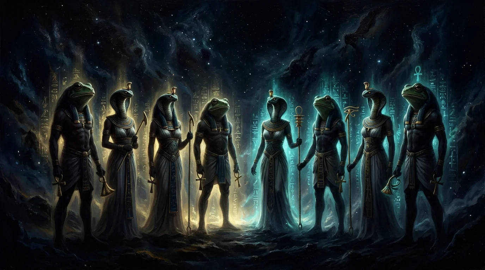
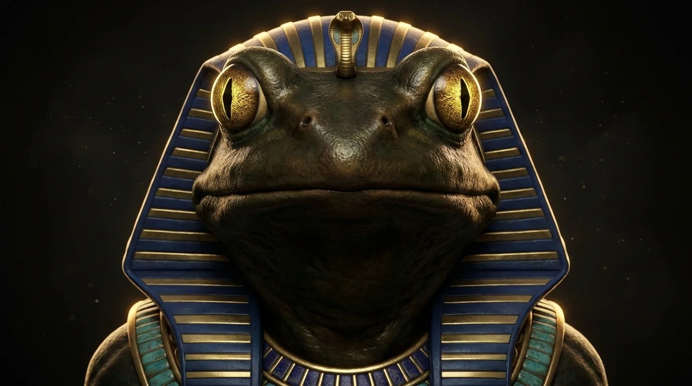
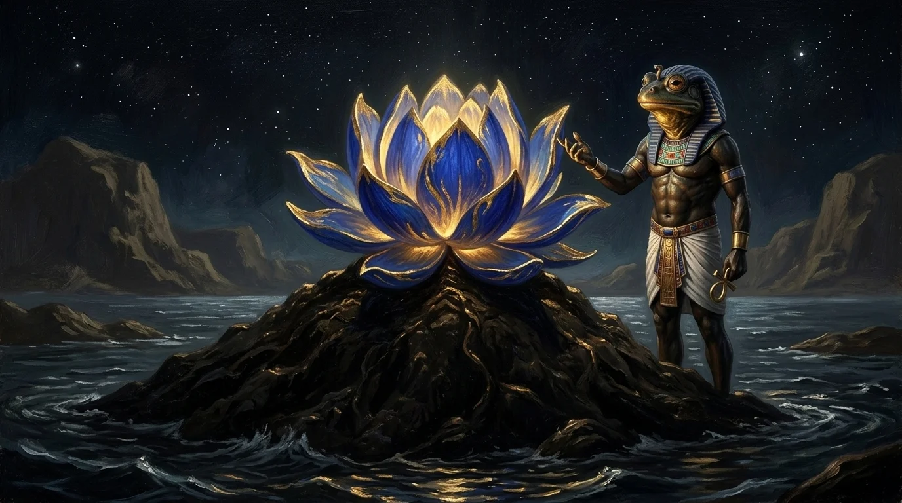
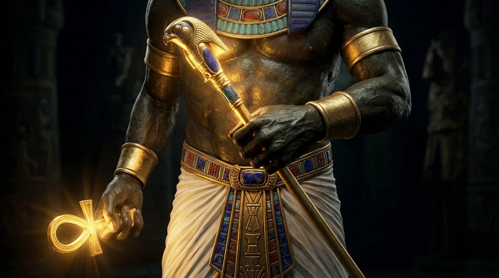
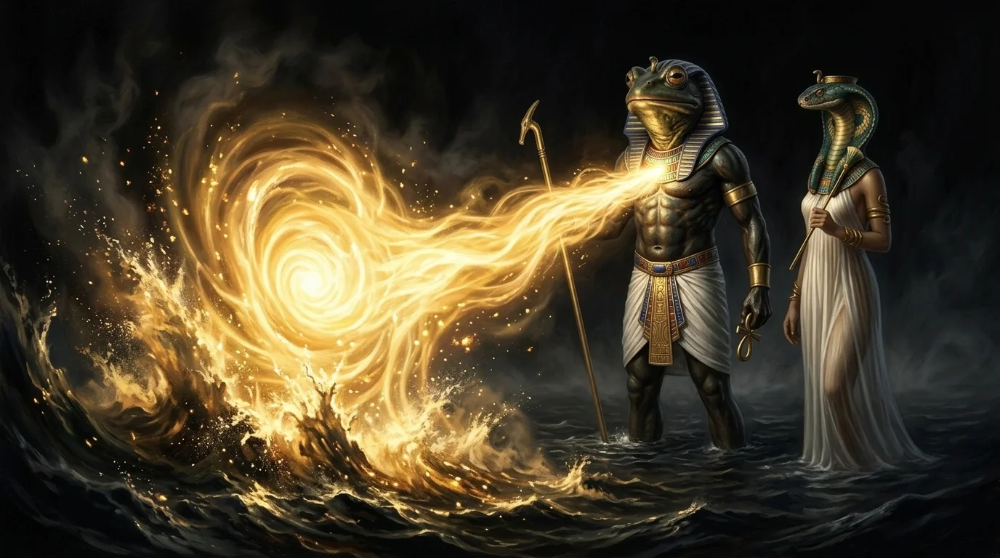

Amón primordial, el señor del aliento invisible y la fuerza oculta que agitó las aguas antes de la creación.
Mucho antes de que el sol de Ra dorara los muros de Karnak o las crecidas del Nilo depositaran su limo fértil sobre la tierra negra de Egipto, el cosmos no era más que una masa líquida, fría y desprovista de orillas llamada Nun. En aquel abismo sin límites ni tiempo, donde la luz no había nacido y ninguna voz humana pronunciaba palabra alguna, habitaban ocho entidades primordiales agrupadas en cuatro parejas sagradas: la misteriosa Ogdóada de Hermópolis. Cada par encarnaba una dimensión elemental del caos previo al orden. Las aguas infinitas pertenecían a Nun y Naunet; la tiniebla absoluta era el dominio de Kuk y Kauket; la inmensidad informe dependía de Huh y Hauhet. Y en el núcleo más recóndito de aquella negrura sin fondo se alzaba la presencia más enigmática del panteón: Amón.

Los antiguos escribas grabaron su nombre en los muros de piedra como «Jmn», un vocablo sagrado que significa literalmente «El Oculto» o «Aquel que no puede ser contemplado por los ojos mortales». A diferencia de las deidades que milenios después se manifestarían en templos colosales y estatuas de piedra brillante, el Amón original era la potencia invisible por excelencia, el principio que existe antes de que cualquier cosa adquiera nombre o figura. Los bajorrelieves más antiguos lo representaban con un cuerpo vigoroso de piel bronceada y la cabeza imponente de una rana sagrada de escamas oscuras y ojos de oro puro, coronado por el aliento silencioso que precede a todo movimiento. Junto a su consorte femenina, la diosa serpiente Amaunet, custodiaba el cuarto misterio del cosmos: la facultad de actuar en la sombra sin dejar rastro visible.
Para la cosmovisión del Antiguo Egipto, la imagen de la rana no era un capricho mitológico, sino un símbolo prodigioso de fecundidad y vida latente. Así como las ranas emergían milagrosamente del lodo negro tras la retirada de las aguas del Nilo, Amón encarnaba la semilla divina dispuesta a brotar desde la materia informe del abismo primordial. En su mano derecha sostenía el cetro was, símbolo del poder que rige las fuerzas ocultas, y en su mano izquierda portaba el anj dorado, la llave que insufla el soplo vital en los seres vivos. Él era el viento celestial que recorría las aguas estancadas sin hacer ruido, la primera pulsación de aire que impedía que la materia quedara atrapada para siempre en la rigidez de una muerte eterna. Los sacerdotes de Hermópolis lo veneraban como el guardián del aliento que un día llenaría los pulmones de reyes y mortales.
Sin embargo, aquella naturaleza oculta albergaba también un aspecto estremecedor que infundía temor reverencial. Amón era la personificación del vacío insondable, la nada previa a la existencia donde cualquier pensamiento humano se disuelve en el vértigo. Su rostro anfibio, bañado por la penumbra de las profundidades acuáticas, recordaba a los hombres que el orden del mundo es frágil y que la misma fuerza invisible que insufla la vida puede retirarse de golpe, dejando tras de sí la asfixia silenciosa, el frío de las tumbas y el horror del caos original. En los santuarios más arcaicos, los sacerdotes jamás pronunciaban su verdadero nombre en voz alta, temiendo que una invocación imprudente perturbara el delicado equilibrio de las corrientes cósmicas.

Muchos confunden a este dios originario con el Amón-Ra tebano de épocas posteriores, el gran monarca imperial coronado con altas plumas de avestruz y cabeza de carnero que gobernó el Imperio Nuevo. Pero el Amón de la Ogdóada era infinitamente más antiguo que cualquier sacerdocio tebano y que cualquier corona de oro. No exigía sacrificios multitudinarios ni riquezas arrebatadas a naciones vencidas; su santuario no estaba hecho de granito tallado, sino de la oscuridad intacta de los primeros instantes del mundo.
El momento culminante de su mito tuvo lugar en la noche sagrada de la creación. Las aguas de Nun pesaban como plomo y las tinieblas de Kuk amenazaban con congelar el tiempo en una parálisis sin fin. Fue entonces cuando Amón, uniendo su potencia masculina al soplo serpentino de Amaunet, desató desde su pecho una corriente de aire cálido que hendió las profundidades de arriba abajo. Aquella turbulencia sin origen agitó el abismo desde sus entrañas, provocando que las olas oscuras chocaran con violencia y el fango primordial comenzara a arremolinarse sobre sí mismo. De esa sacudida nació la primera tierra firme del universo: la sagrada Colina de las Llamas.



Sobre aquel montículo humeante, vigilado de cerca por los ojos dorados de Amón y bendecido por su aliento invisible, brotó el gran loto primordial que abrió lentamente sus pétalos para dar a luz al niño solar, desgarrando la noche cósmica con el primer amanecer de la historia. Cumplida su misión generadora, las deidades de la Ogdóada no buscaron reinar sobre la tierra ni imponer sus leyes a los mortales. Descendieron en procesión solemne a las criptas subterráneas bajo Medinet Habu para sumergirse en el sueño de los siglos.
Allí permanece Amón primordial en la quietud eterna, recordándonos que el origen de la existencia no fue un golpe de espada ni un trueno destructor, sino el aliento misterioso de un viento invisible que agitó la oscuridad antes de que naciera la luz.